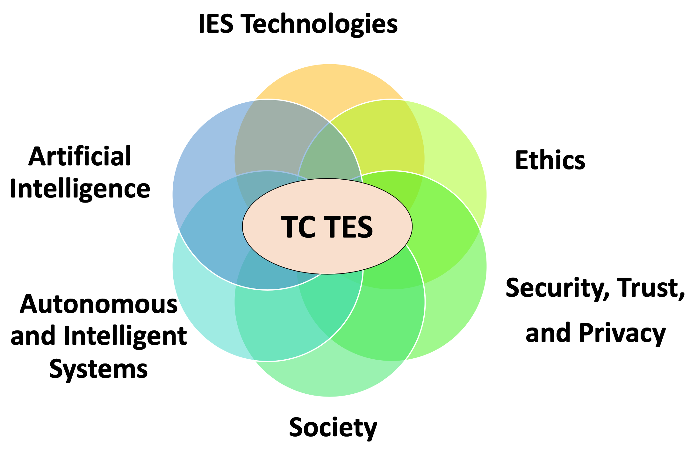

Motivation and Scope
The rapid advances in a number of areas including industrial technologies, Artificial Intelligence (AI),
autonomous systems etc.
has led to a new generation of increasingly sophisticated and autonomous systems that are increasingly fueled
by AI.
Such systems are utilized not only within controlled industrial environments but also in consumer
applications, and
interact with people and systems on a daily basis.
The prevalence of such systems in tangible (e.g., self-driving cars, intelligent robots) or intagible
form (e.g., AI decision and profiling algorithms) impact society at multiple levels and have an ethical
dimension.

The IEEE IES TC on Technology Ethics and Society (TC-TES) is motivated by these rapid advances and aims to address the intersection of key interdisciplinary areas between technology, ethics and society as also visualized below. TC-TES was created in June 2020.
Current research in the area of Technology Ethics and Society include (but are not limited to):
- Machine Ethics
- Implications of Industrial Technologies
- AI and Ethical Decision Making
- AI Control and failsafe
- AI Explainability
- AI Transparency
- Algorithmic Bias
- Artificial Intelligence Societal Implications
- Autonomous Systems in Society
- Education and Training on Ethical AI Systems
- Engineering Management of AI Systems and Applications
- Engineering of Ethical Systems
- Ethical Decision-making and Safety in Industrial Systems
- Ethically driven Robotics and Automation Systems
- Industrial Technologies Acceptance
- Rational Decision Making and Ethics
- Security, Trust and Privacy Implications of Autonomous Systems